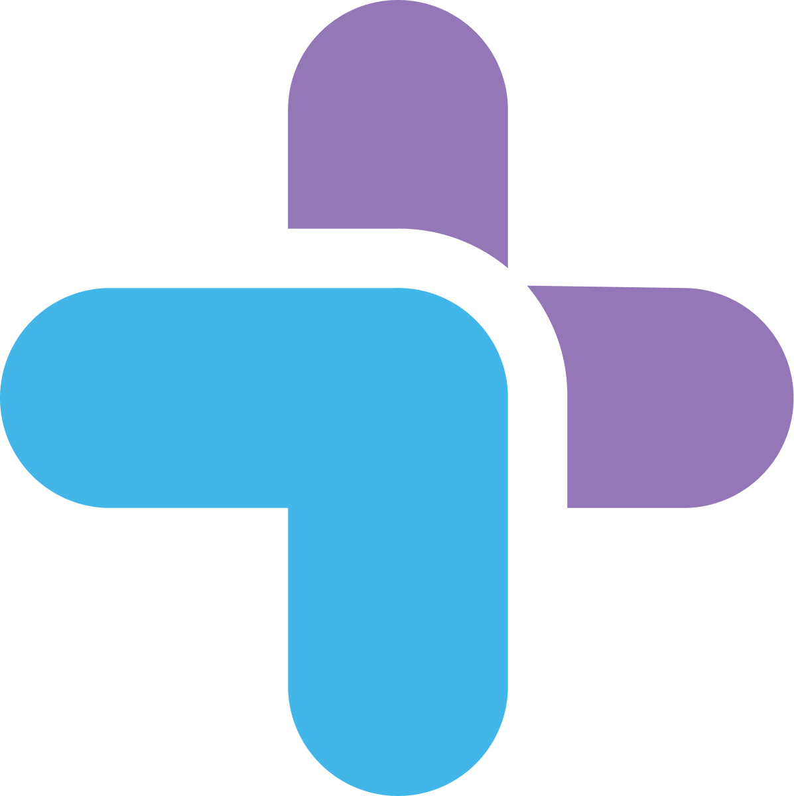
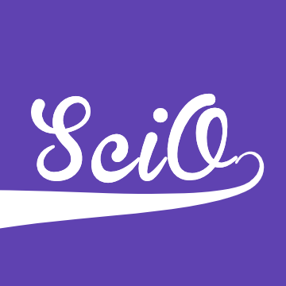

Yash Patil
Hey, I'm Yash, a student at LASA High School in Austin, Texas.
I enjoy building devices for Science Olympiad and working on projects that solve real needs.
Recently, I co-founded Helping Hands, a nonprofit organization that provides free grocery delivery for those most vunerable to COVID-19: senior citizens, the immunocompromised, and people with pre-existing medical conditions which put them at additional risk.
Check out more of my projects by clicking on icons to the right!
Contact me: yash.s.patil125@gmail.com
Hey, I'm Yash, a student at LASA High School in Austin, Texas. I enjoy building devices for Science Olympiad and working on projects that solve real needs.
Recently, I co-founded Helping Hands, a nonprofit organization that provides free grocery delivery for those most vunerable to COVID-19: senior citizens, the immunocompromised, and people with pre-existing medical conditions which put them at additional risk.
Check out more of my projects by clicking on icons to the right!
Contact me: yash.s.patil125@gmail.com


